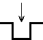
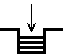

This chapter describes the physical keyboards and keyboard-to-host interface
supported by the VT510 video terminal.
8.1 Overview
The VT510 supports two keyboard layouts:
- VT keyboard (VT layout)
- Enhanced PC 101/102 keyboard (PC layout)
Any time the terminal is operating, a keyboard encoding is being used to
translate graphic character keystrokes into character codes, called the keyboard
character set. The Keyboard Character set is a function of the Keyboard
Dialect, the default character set, the 7-bit or 8-bit characters setting, and any
keyboard customization defined in terminal Set-Up.
When the graphic character assigned to a keystroke (which usually corresponds
to the legend appearing on the keycap) has a corresponding character in the
Keyboard Character set, the terminal transmits the corresponding character
code for that keystroke. The code transmitted for any given keystroke can vary
depending on the Keyboard Character set. If the graphic character assigned to
a keystroke does not have a corresponding character in the Keyboard Character
set, then that keystroke becomes dead.
The term keyboard layout describes the physical layout of a keyboard, specifically,
the number of keys and their positions on the keyboard. The keys are marked
with symbols which indicate their function. Graphic keys transmit codes that
match the graphic character symbol on the key cap, whereas keys such as the
Tab key transmit control codes. Modifier keys (Shift, Ctrl and Alt) change the
behavior of other keys. Function keys transmit multi-byte sequences of control
and character data; local function keys enable local terminal functions (For
example, Set-Up, and Print Screen).
8.2 PC Keyboard—VT Style vs. PC Style
The VT510 is designed to operate with either a VT keyboard or an enhanced PC
keyboard. These keyboards differ in the number and positioning of keys. This
leads to different user expectations of where function and local function keys
are positioned on the PC keyboard. For example, traditional VT keyboard users
expect F2 and F3 to enable local functions for printing the screen and entering
Set-Up. Traditional PC keyboard users expect that these same keys will send
signals to the host to control the application. These keyboard layouts are called
VT style and PC style layouts. The PC style layout is the factory default.
VT Style is an alternate way of mapping the PC keyboard to look like a VT
keyboard. With this mapping, PC keys send the same function sequences as
similarly named keys on the VT layout (Figure 8–1). Since the enhanced PC
layout does not correspond key-for-key to the VT Layout, some adaptation is
necessary. Some function keys, that are missing from the PC keyboard, can be
created by pressing a Function Key in combination with Caps Lock (For example,
press and hold Caps Lock while typing another key).
Pressing Caps Lock/Num Lock toggles between the VT Style and PC Style. When
VT Style is selected, "VT" is displayed on the keyboard indicator line at the
bottom of the screen. The style is saved in NVM when you select Save settings.
VT Style and PC Style mappings apply to VT modes only.
8.2.1 Differences—PC Style vs. VT Style
The differences between PC Style and VT Style are:
- Editing keypad keys Home and Delete send different sequences corresponding
to their functions in PC Style and VT Style.
- Numeric keypad keys send different sequences when the keypad is in numeric
mode to accommodate the Num Lock feature. With Num Lock off, the numeric
keypad sends editing key sequences.
- Top row function keys F1 through F5 send function key sequences. Local
terminal functions are relocated to the Print Screen, Scroll Lock, and Pause
keys on the enhanced PC layout.
- Print Screen, Scroll Lock, and Pause are either local function keys or function
keys in PC style, but are only function keys in VT Style.
- The keys to operate the Copy/Paste function are different between the two
styles (See Table 8–5).
- Left Alt/Space works as compose in VT Style only.
8.3 Top Row Function Keys
There are 20 top row function keys on the VT layout and 12 on the enhanced
PC layout. Caps Lock/F1 through Caps Lock/F10 keys on the enhanced PC
layout transmit the same sequences as F11 through F20 in the VT layout.
Additional unique function sequences are transmitted by pressing function keys
in combination with Shift, Alt, or Ctrl keys. See DECFNK and DECPAK for details.
In VT Style, the F1 through F5 keys operate the same as on the VT layout.
In VT Style, F13 (Print Screen), F14 (Scroll Lock), and F15 (Pause) send their
corresponding function key sequences. In PC Style, the F1 through F5 keys
send function sequences (unless re-programmed) while Print Screen, Scroll Lock,
and Pause default to local functions.
8.4 Main Key Array
This section describes the main keys on the keyboard.
8.4.1 Character Sets
Only characters from the currently selected keyboard character set may be
generated. All other graphic character keystrokes are ignored. The following
keyboard character sets are supported: ISO Latin 1, ISO Latin 2, ISO Latin
Cyrillic, ISO Latin Greek, ISO Latin Hebrew, ISO Latin 5 (Turkish), DEC
Multinational, DEC Cyrillic, DEC Greek, DEC Hebrew and DEC Turkish. When
7-bit NRCS characters is selected, a corresponding 7-bit NRC set is supported
based on the Keyboard Dialect.
PC character sets are not supported in VT modes since the terminal is being used
as a conventional video terminal that happens to have a PC keyboard attached.
New applications should be written to use ISO character sets. (PC character sets
are available in PCTerm and SCO console mode.)
8.4.2 Caps Lock
The Lock function may operate in three ways:
| Caps Lock |
Alphabetic keys send their shifted character. |
| Shift Lock |
All keys on the main key array send their shifted character. |
| Reverse Lock |
Pressing Shift temporarily reverses the effect of Caps Lock; that is,
unshifted or lowercase alphabetic characters are transmitted. |
Pressing and releasing the Caps Lock key toggles the lock state on or off.
The Caps Lock key is also used to generate keystrokes for keys that are not
present on the keyboard. Known as keyboard extension, this is done by pressing
and holding the Caps Lock key and then pressing the extension key. The lock
state is not toggled when an extension keystroke is pressed. Extension keystrokes
are shown in Table 8–5, Local Functions.
8.4.3 Tab Key
With an enhanced PC keyboard, pressing Shift/Tab causes a CBT sequence, CSI Z,
to be transmitted. A horizontal tabulation code (HT, 0/9) is transmitted when a
VT keyboard is used.
8.4.4 Left Alt
Left Alt on the PC layout corresponds to the Alt Function on the VT layout.
Depressing the left Alt key performs the following functions (unless re-programmed):
- Left Alt/Space acts as the compose key in VT Style.
- On the North American PC layout, left Alt is the same as Alt Gr when pressed
and held in combination with keys from the numeric keypad. This feature
keeps the two Alt keys equivalent to each other.
8.4.5 Right Alt
The right Alt key appears on the North American, Hebrew, and Greek PC layouts.
On other country layouts, the right Alt key appears as Alt Gr. Depressing the right
Alt key performs the following functions (unless re-programmed):
- Right Alt/Space acts as the compose key in VT Style. This feature keeps the
two Alt keys equivalent.
- Right Alt key is the same as the Alt Gr key when pressed and held in
combination with keys from the numeric keypad.
- The right Alt key is the same as the Right Alt function on the VT layout with
the exceptions listed previously.
8.4.6 Alt Gr
The right Alt key is marked as Alt Gr on some Enhanced PC layouts. The words
Alt Gr are short for alternate graphic and corresponds roughly to the function of
the compose key.
- Alt Gr in combination with graphic character keys generate the character
corresponding to the right side of the keyboard.
- Alt Gr is used for numeric keypad compose.
8.4.7 Modifier Keys
Table 8–1 shows the corresponding modifier keys for the VT and the enhanced PC
layouts.
Table 8–1 VT Layout vs. Enhanced PC Layout Modifier Keys
| VT Keyboard |
PC Keyboard |
| Left Shift |
Left Shift |
| Right Shift |
Right Shift |
| Lock |
Caps Lock |
| Ctrl |
Left Ctrl |
| none |
Right Ctrl |
| Left Compose Character |
Alt Gr |
| Right Compose Character |
none |
| Left Alt |
Left Alt |
| Right Alt |
none or Right Alt |
There is no Ctrl key on the right side of the VT keyboard. Left and right Ctrl
keys on the enhanced PC layout generates the single control function on the VT
Layout.
There is no key labeled "compose" on the enhanced PC layout. Alt Gr (Right Alt)
accesses the supplemental characters on the top right half of the keyboard on
some enhanced PC layout keyboards. Alt Gr can be used with the numeric keypad
to enter character codes directly. Left Alt/Space can be used to initiate compose
sequences when VT Style is selected.
8.5 Editing Keypad Keys
Figure 8–3 shows the layout for the DEC VT and enhanced PC editing keypads.
When VT Style is selected, the enhanced PC layout editing keys transmit the
same function sequences as the similarly legend editing keys in the VT layout. In
PC Style, the Home key sends a Cursor Up (CUP) sequence to move the cursor
home and the Delete key transmits a DEL (7/15).
Table 8–2 lists the key sequences for PC editing keypads.
Table 8–2 Editing Keypad Sequences for PC Layout
| Enhanced PC Legend |
VT Legend |
VT Style Sequence |
PC Style Sequence |
| Insert |
Insert Here |
CSI 2 ~ |
CSI 2 ~ |
| Delete |
Remove |
CSI 3 ~ |
DEL |
| Home |
Find |
CSI 1 ~ |
CSI H |
| End |
Select |
CSI 4 ~ |
CSI 4 ~ |
| Page Up |
Prev Screen |
CSI 5 ~ |
CSI 5 ~ |
| Page Down |
Next Screen |
CSI 6 ~ |
CSI 6 ~ |
In addition to these unshifted sequences, the editing keys can send unique
sequences when pressed in combination with Shift, Alt, or Ctrl. See DECFNK for
details.
8.6 Cursor Keypad Keys
The cursor keypad keys send the same sequences as the VT layout. Additional
unique sequences can be sent when pressed in combination with Shift, Alt, or Ctrl.
See DECFNK for details.
8.7 Numeric Keypad Keys
The enhanced PC layout numeric keypad has three differences from the VT
layout:
- The four keys at the top of the keyboard are labeled Num Lock, /, *, and - instead
of PF1 through PF4.
- The Num Lock key toggles the keypad keys, sending either numerals or
function sequences.
In VT Style, with Application Mode enabled, the numeric keypad keys send the
same sequences as the corresponding keys on a VT layout. When the numeric
keypad is in numeric mode, the four keys at the top of the keyboard still operates
as PF1 through PF4, and the + key sends an ASCII "+" character.
Table 8–3 shows the numeric keypad sequences in VT Style.
Table 8–3 PC Layout Numeric Keypad Sequences - VT Style
| PC Key |
DEC Key |
Numeric Mode |
Application Mode |
| Num Lock |
PF1 |
SS3 P |
SS3 P |
| / |
PF2 |
SS3 Q |
SS3 Q |
| * |
PF3 |
SS3 R |
SS3 R |
| - |
PF4 |
SS3 S |
SS3 S |
| Caps Lock/+ |
- |
|
SS3 m |
| + |
, |
"+" |
SS3 l |
| . |
. |
"." |
SS3 n |
| Enter |
Enter |
CR |
SS3 M |
| 0 |
0 |
"0" |
SS3 p |
| 1 |
1 |
"1" |
SS3 q |
| 2 |
2 |
"2" |
SS3 r |
| 3 |
3 |
"3" |
SS3 s |
| 4 |
4 |
"4" |
SS3 t |
| 5 |
5 |
"5" |
SS3 u |
| 6 |
6 |
"6" |
SS3 v |
| 7 |
7 |
"7" |
SS3 w |
| 8 |
8 |
"8" |
SS3 x |
| 9 |
9 |
"9" |
SS3 y |
In PC Style, when the numeric keypad is in Application Mode, the numeric
keypad keys send the same sequences as the corresponding keys on the VT layout
as shown in Table 8–3.
In PC Style, when the numeric keypad is in Numeric Mode, the keypad keys
send either editing keypad sequences corresponding to the gray legend in the
lower part of the keyboard, or the numerals corresponding to the black legend
in the upper part of the keyboard. The numerals are sent when Shift or the
Num Lock has been depressed. The Num Lock state can be toggled on or off by
pressing the Num Lock key. "Num Lock" appears on the keyboard indicator line
when this feature is activated. If Num Lock is on and "Reverse Lock" is activated,
pressing Shift temporarily reverses the effect of Num Lock.
Table 8–4 lists the numeric keypad sequences in PC Style Numeric mode.
Table 8–4 PC Layout Numeric Keypad Sequences - PC Style, Numeric Mode
| Keys |
Num Lock Off unshifted, or
Num Lock On with Shift |
Num Lock On unshifted, or
Num Lock Off with Shift |
| Num Lock |
|
|
| / |
/ |
/ |
| * |
* |
* |
| - |
- |
- |
| + |
+ |
+ |
|
DEL |
. |
| Enter |
CR |
CR |
|
CSI 2 ~ |
0 |
|
CSI 4 ~ |
1 |
|
CSI B |
2 |
|
CSI 6 ~ |
3 |
|
CSI D |
4 |
| 5 |
|
5 |
|
CSI C |
6 |
|
CSI H |
7 |
|
CSI A |
8 |
|
CSI 5 ~ |
9 |
8.8 Local Function Key Defaults
The keys used to perform local terminal functions differ between the VT
keyboard, PC keyboard, and the mode selection. Table 8–5 shows the
corresponding keys for the default local functions. The function number in
Table 8–5 is used in the DECPFK host sequence or DECPAK's alternate function
to specify a change to that local function key.
Note
See Chapter 2 to re-define keys using the Define Key Editor.
Table 8–6 lists the local functions for ASCII emulations.
Table 8–6 Local Functions for ASCII emulations
| Function |
DEC VT Layout |
EPC Layout |
| Hold Screen |
F1 |
Scroll Lock |
| Print Page |
Ctrl/Shift/. kpd |
Ctrl/Shift/. kpd |
| Set-Up |
F3 |
Alt/Print Screen |
| Caps Lock/F3 |
Caps Lock/Print Screen |
| Break |
F5 |
Ctrl/Pause |
| Hard Reset |
Ctrl/F3 in Setup |
|
| Soft Reset |
Shift/F3 |
Alt/Shift/Print Screen |
| Autoprint Mode |
Ctrl/F2 |
Ctrl/Print Screen |
| Ctrl/Shift/F2 |
Ctrl/Shift/Print Screen |
|
Alt/Ctrl/Shift/Print Screen |
| Disconnect |
Shift/F5 |
Pause |
| Send Answerback |
Ctrl/F5 |
Shift/Pause |
| Display Next Page |
Ctrl/Next |
Ctrl/Page Down |
| Shift/Ctrl/Next |
Ctrl/Shift/Page Down |
| Active Other Window |
Ctrl/Next or Ctrl/Prev |
Ctrl/Page Down or Ctrl/Shift/Page Down or
Ctrl/Page Up or Ctrl/Shift/Page Up |
| Display Prev. Page |
Ctrl/Prev |
Ctrl/Page Up |
| Shift/Ctrl/Prev |
Ctrl/Shift/Page Up |
| Display Page 0 |
Ctrl/0 kpd |
Ctrl/0 kpd |
| Display Page 1 |
Ctrl/1 kpd |
Ctrl/1 kpd |
| Display Page 2 |
Ctrl/2 kpd |
Ctrl/2 kpd |
| Display Page 3 |
Ctrl/3 kpd |
Ctrl/3 kpd |
| Display Page 4 |
Ctrl/4 kpd |
Ctrl/4 kpd |
| Display Page 5 |
Ctrl/5 kpd |
Ctrl/5 kpd |
| Block Mode |
F4 |
Ctrl/Shift/Pause |
| Ctrl/F4 |
|
| Shift/Ctrl/F5 |
|
| Change Status Line Display |
Ctrl/⇒ |
Ctrl/⇒ |
| Ctrl/Shift/⇒ |
Ctrl/Shift/⇒ |
| Insert Mode |
Ctrl/PF4 |
Ctrl/Insert |
| Ctrl/Shift/PF4 |
Ctrl/Shift/Insert |
| Monitor Mode |
Ctrl/Shift/1 kpd |
Ctrl/Shift/1 kpd |
| Screen Saver |
Ctrl/Shift/PF3 |
Ctrl/Shift/End |
| Speed Scroll Rate |
Ctrl/Shift/⇑ |
Ctrl/Shift/⇑ |
| Slow Scroll Rate |
Ctrl/Shift/⇓ |
Ctrl/Shift/⇓ |
| Home Cursor & Clear Display |
|
Ctrl/Shift/Home |
| Roll Active Window Up in Page |
Ctrl/⇑ |
Ctrl/⇑ |
| Roll Active Window Down In Page |
Ctrl/⇓ |
Ctrl/⇓ |
| Toggle Split Screen |
Ctrl/Shift/- kpd |
Ctrl/Shift/- kpd |
| Raise Split Line |
Ctrl/- kpd |
Ctrl/- kpd |
| Lower Split Line |
Ctrl/, kpd |
N.A. |
| Adjust Window to Include Cursor |
|
Ctrl/Home |
| Cursor Drag Mode |
Ctrl/Shift/, kpd |
N.A. |
| Caps Lock State |
Lock |
Caps Lock |
| Num Lock State |
N.A. |
Num Lock |
| Keyclick State |
Shift/Enter kpd |
Shift/Enter kpd |
8.8.1 Numeric Keypad Compose
Pressing and holding Compose, Alt or Alt Gr while typing a decimal number on
the numeric keypad sends the corresponding decimal character code when the
compose key is released. If the . key on the keyboard is pressed while entering
a number, then the value entered before pressing the . key is multiplied by 16
and added to the value entered next. This supports column/row entry commonly
used in character coding tables.
When accessibility aids are enabled, remember to Lock and Unlock the compose
key when entering codes.
8.8.2 Accessibility Aids
Accessibility aids allow the user with limited motor skills to use modifier
key combinations in a sequential manner rather than a simultaneous manner
(default). All modifier key combinations are supported.
The Accessibility aids option is enabled by depressing the Shift key five times in
succession. This option can be disabled by pressing and holding a modifier key
while pressing another key.
Once enabled, this option provides two levels of assistance known as Latch and
Lock. The Latch state is achieved by pressing a modifier key once and affects the
next key pressed. The Lock state is achieved by pressing a modifier key twice.
All keys pressed are affected by the modifier until they are unlocked by either
depressing the modifier key again or depressing another modifier key twice. Once
any modifier is in the Locked state, pressing other modifier keys adds those
modifiers to the Locked state.
A small icon appears on the Keyboard Indicator Line or Status Line to provide
user feedback on the changing modifier state.
The icons for each state are as follows:
|
Accessibility Aid Keys Enabled |
 |
Modifier Latched (Cleared on Next Keystroke) |
 |
Modifier Locked |
When Accessibility aid keys are disabled, no icon is displayed on the Keyboard
Indicator Line or Status Line.
8.9 Controlling Keyboard LEDs
The following sequences allow the host to control keyboard modifier states for
Caps Lock, Scroll Lock, and Num Lock or keyboard LEDs to indicate program
status. They are as follows:
| ESC [ ? 108 h |
– |
Set NumLock mode (DECNUMLK) |
| ESC [ ? 108 l |
– |
Reset NumLock mode |
| ESC [ ? 109 h |
– |
Set CapsLock mode (DECCAPSLK) |
| ESC [ ? 109 l |
– |
Reset CapsLock mode |
"Scroll Lock" or "Hold Screen" cannot be controlled from the host because it
suspends transmission from the host and there is no way to release it.
DECLL controls keyboard LEDs independently of any keyboard state. The use
of LEDs for this purpose conflicts with their use as keyboard state indicators.
The host control selects a mode of how the keyboard LEDs are to be used: as
keyboard indicators; or host indicators. If host indicators is selected, then the
DECLL sequence can be used to control the keyboard LEDs.
The following control sequences are used to control keyboard LEDs.
| ESC [ ? 110 h |
– |
Set Keyboard LEDs Host Indicator Mode (DECKLHIM) |
| ESC [ ? 110 l |
– |
Reset Keyboard LEDs Host Indicator Mode (default) |
Note
See Chapter 2 to re-define keys using the Define Key Editor.
8.10 Keyboard Languages
Table 8–7 lists the keyboard languages available for the VT terminal.
Table 8–7 VT Keyboard Layouts
| Austrian/German |
Greek |
Russian |
| Belgian/French |
Hebrew |
SCS |
| British |
Hungarian |
Slovak |
| Canadian-French/English |
Italian |
Spanish |
| Czech |
North American |
Swedish |
| Danish |
Norwegian |
Swiss-French |
| Dutch |
Polish |
Swiss-German |
| Finnish |
Portuguese |
Turkish F |
| Flemish |
Romanian |
Turkish Q |
Table 8–8 lists the keyboard languages available for the PC terminal.
Table 8–8 Enhanced PC Keyboard Layouts
| Belgian |
Greek |
Romanian |
| British |
Hebrew |
Russian |
| Czech |
Hungarian |
SCS |
| Danish |
Italian |
Slovak |
| Dutch |
Latin American |
Spanish |
| Finnish |
North American |
Swedish |
| French |
Norwegian |
Swiss-French |
| French-Canadian |
Polish |
Swiss-German |
| German |
Portuguese |
Turkish |
8.11 Switching Between Keyboard Languages
The VT510 allows the user to easily switch between two different keyboard
layouts for several languages (English and Hebrew, for example). This feature
allows the VT510 to support both existing conventions and emerging standards
for extending the graphic input repertoire and/or switching between languages in
dual language environments.
The primary keyboard language corresponds to "Group 1" and generally
references the legends on the left portion of the keyboard.
The secondary keyboard language corresponds to "Group 2" and generally
references the legends on the right portion of the keyboard.
Unless otherwise overridden, Ctrl/Alt/F1 activates the primary keyboard language
(locking shift), and Ctrl/Alt/F2 activates the secondary keyboard language. These
factory defaults are standard on PCs.
Selecting a new Keyboard Dialect in Set-Up resets the keyboard group shift
state to Group 1 and automatically initializes the keyboard character set and VT
default character set as shown in table Table 8–9. The keyboard character set is
initialized to match the VT default character set.
Table 8–9 Default Character Set when changing Keyboard Language
| Keyboard Language |
VT Default Character Set |
If desired, change to ... |
| Austrian/German,
Belgian/French, British,
Canadian-English,
Canadian-French, Flemish,
Danish, Dutch, Finnish, Italian,
Portuguese, North American,
Norwegian, Spanish, Swedish,
Swiss-French, Swiss-German. |
DEC MCS or ISO Latin-1 |
ISO Latin-1 |
| Czech, Hungarian, Polish,
Romanian, SCS, or Slovak |
ISO Latin-2 |
ISO Latin-1 |
| Greek |
DEC Greek or ISO Latin-Greek |
ISO Latin-Greek |
| Hebrew |
DEC Hebrew or ISO Latin-Hebrew |
ISO Latin-Hebrew |
| Russian |
KOI-8 Cyrillic or ISO Latin-Cyrillic |
ISO Latin-Cyrillic |
| Turkish |
DEC Turkish or ISO Latin-Turkish |
ISO Latin-Turkish |
If 7-bit NRCS characters is selected, then the following corresponding NRC sets
are available on the VT keyboards:
VT keyboards:
- Austrian/German - German NRC
- Belgian/French - French NRC
- British - U.K. NRC
- Canadian-English - French Canadian NRC
- Canadian-French - French Canadian NRC
- Danish - Norwegian/Danish NRC
- Finnish - Finnish NRC
- Flemish - French NRC
- Greek - DEC Greek NRC
- Hebrew - DEC 7-bit Hebrew
- Italian - Italian NRC
- Norwegian - Norwegian/Danish NRC
- Portuguese - Portuguese NRC
- Russian - DEC Russian NRC
- SCS - SCS NRC
- Spanish - Spanish NRC
- Swedish - Swedish NRC
- Swiss-French - Swiss NRC
- Swiss-German - Swiss NRC
- Turkish F - DEC 7-bit Turkish
- Turkish Q - DEC 7-bit Turkish
The 7-bit NRCS character sets are not available on the following keyboards:
- Czech
- Dutch
- Hungarian
- North American
- Polish
- Romanian
- Slovak
If 7-bit NRCS characters is selected, then the following corresponding NRC sets
are available on the enhanced PC keyboards:
Enhanced PC Keyboards
- Belgian - French NRC
- British - U.K. NRC
- Danish - Norwegian/Danish NRC
- Finnish - Finnish NRC (same KB as Sweden)
- French - French NRC
- French Canadian - French Canadian NRC
- German - Austrian/German NRC
- Greek - DEC Greek NRC
- Hebrew - DEC 7-bit Hebrew
- Italian - Italian NRC
- Latin American - Spanish NRC
- Norwegian - Norwegian/Danish NRC
- Portuguese - Portuguese NRC
- Russian - DEC Russian NRC
- SCS - SCS NRC
- Spanish - Spanish NRC
- Swedish - Swedish NRC (same KB as Finland)
- Swiss-French - Swiss NRC (Swiss Fr./Gr. is a single PC keyboard)
- Swiss-German - Swiss NRC (Swiss Fr./Gr. is a single PC keyboard)
- Turkish - DEC Turkish NRC
The 7-bit NRCS character sets are not available on the following enhanced PC
keyboards:
- Czech
- Dutch
- Hungarian
- North American
- Polish
- Romanian
- Slovak
8.11.1 Non-Spacing Accent Marks
Accented characters that do not appear directly on a keyboard can often be
entered by typing a non-spacing diacritical mark followed by a base character.
Table 8–10 Non-Spacing Accent Marks
| Symbol |
Non-Spacing Accent Name |
| ´ |
Acute accent |
| ˘ |
Breve |
| ˇ |
Hacek (caron) |
| ¸ |
Cedilla |
| ^ |
Circumflex accent |
| ¨ |
Diaeresis (umlaut) |
| ˙ |
Dot above |
| ˝ |
Double acute accent |
| ` |
Grave accent |
| ΄ |
Greek Tonos |
| ¯ |
Macron |
| ˛ |
Ogonek |
| ° |
Ring above |
| ~ |
Tilde |
Keystrokes assigned non-spacing accent marks do not send any character
code immediately, but are used instead to modify the code transmitted by the
subsequent keystroke. If a keystroke that has been assigned a non-spacing accent
mark is followed immediately by a graphic character, then this forms a valid
character in the keyboard character set, and the corresponding character code is
transmitted.
When a non-spacing diacritical key is pressed, "Compose" appears on the
keyboard indicator line until the next subsequent keystroke.
If the keystroke immediately following the non-spacing diacritical keystroke
does not form a valid character in the keyboard character set, then the non-spacing
diacritical mark is converted to the corresponding character, if any, and
transmitted from the current keyboard character set. The second keystroke is
then processed normally. This "error recovery" is different from previous VT
auto-compose processing; however, this process follows the emerging standard
used on personal computers.
8.11.2 German
For German keyboards, the Group Shift (left Compose) key functions as the
keyboard repertoire extension mechanism. Group 1 and Group 2 are defined
within the German keyboard dialect and are used whenever the keyboard
language is set to German. Group Shift operates as a single shift prefix if pressed
and released or as a modifier key if pressed and held.
8.11.3 Hebrew
When Hebrew is selected as the Keyboard Dialect, the Ctrl/Hebrew key toggles
between the primary and secondary keyboard language.
When switching into 7-bit Hebrew, lowercase English letters are swapped with
their corresponding Hebrew characters throughout the display. The Shift/Hebrew
key also performs this swapping function at any time.
8.12 Keystation Numbers
Figure 8–4 shows the keystation numbers for a VT keyboard.
Figure 8–5 shows a typical legend for a North American VT keyboard.
8.13 Scan Codes Sent in PCTerm Mode for EPC Keyboards
The following keys send the corresponding scan codes, regardless of any modifiers
that may be in effect.
| Key # |
Legend (U.S.) |
Scan Code
Make/Break¹ |
| 1 |
` |
29/A9 |
| 2 |
1 |
02/82 |
| 3 |
2 |
03/83 |
| 4 |
3 |
04/84 |
| 5 |
4 |
05/85 |
| 6 |
5 |
06/86 |
| 7 |
6 |
07/87 |
| 8 |
7 |
08/88 |
| 9 |
8 |
09/89 |
| 10 |
9 |
0A/8A |
| 11 |
0 |
0B/8B |
| 12 |
- |
0C/8C |
| 13 |
= |
0D/8D |
| 14 |
|
7D/FD² |
| 15 |
Backspace |
0E/8E |
| 16 |
Tab |
0F/8F |
| 17 |
Q |
10/90 |
| 18 |
W |
11/91 |
| 19 |
E |
12/92 |
| 20 |
R |
13/93 |
| 21 |
T |
14/94 |
| 22 |
Y |
15/95 |
| 23 |
U |
16/96 |
| 24 |
I |
17/97 |
| 25 |
O |
18/98 |
| 26 |
P |
19/99 |
| 27 |
[ |
1A/9A |
| 28 |
] |
1B/9B |
| 29 |
\ |
2B/AB† |
| 30 |
Caps Lock |
3A/BA |
| 31 |
A |
1E/9E |
| 32 |
S |
1F/9F |
| 33 |
D |
20/A0 |
| 34 |
F |
21/A1 |
| 35 |
G |
22/A2 |
| 36 |
H |
23/A3 |
| 37 |
J |
24/A4 |
| 38 |
K |
25/A5 |
| 39 |
L |
26/A6 |
| 40 |
; |
27/A7 |
| 41 |
' |
28/A8 |
| 42 |
|
2B/AB‡ |
| 43 |
Return |
1C/9C |
| 44 |
Shift |
2A/AA |
| 45 |
|
56/D6‡ |
| 46 |
Z |
2C/AC |
| 47 |
X |
2D/AD |
| 48 |
C |
2E/AE |
| 49 |
V |
2F/AF |
| 50 |
B |
30/B0 |
| 51 |
N |
31/B1 |
| 52 |
M |
32/B2 |
| 53 |
, |
33/B3 |
| 54 |
. |
34/B4 |
| 55 |
/ |
35/B5 |
| 56 |
|
73/F3² |
| 57 |
Shift |
36/B6 |
| 58 |
Left Ctrl |
1D/9D |
| 60 |
Left Alt |
38/B8 |
| 61 |
Space |
39/B9 |
| 62 |
Right Alt |
E0 38/E0 B8 |
| 64 |
Right Ctrl |
E0 1D/E0 9D |
| 90 |
Num Lock |
45/C5 |
| 91 |
|
47/C7 |
| 92 |
|
4B/CB |
| 93 |
|
4F/CF |
| 94 |
|
7C/FC² |
| 96 |
|
48/C8 |
| 97 |
Keypad 5 |
4C/CC |
| 98 |
|
50/D0 |
| 99 |
|
52/D2 |
| 100 |
Keypad * |
37/B7 |
| 101 |
|
49/C9 |
| 102 |
|
4D/CD |
| 103 |
|
51/D1 |
| 104 |
|
53/D3 |
| 105 |
Keypad - |
4A/CA |
| 106 |
Keypad + |
4E/CE |
| 107 |
|
7E/FE² |
| 108 |
Enter |
E0 1C/E0 9C |
| 109 |
|
78/F8² |
| 110 |
Esc |
01/81 |
| 112 |
F1 |
3B/BB |
| 113 |
F2 |
3C/BC |
| 114 |
F3 |
3D/BD |
| 115 |
F4 |
3E/BE |
| 116 |
F5 |
3F/BF |
| 117 |
F6 |
40/C0 |
| 118 |
F7 |
41/C1 |
| 119 |
F8 |
42/C2 |
| 120 |
F9 |
43/C3 |
| 121 |
F10 |
44/C4 |
| 122 |
F11 |
57/D7 |
| 123 |
F12 |
58/D8 |
| 125 |
Scroll Lock |
46/C6 |
¹Make means when the key is pressed; Break means when the key is released.
²Not used on 101/102 keyboard layout.
†101 keyboard layout only
‡102 keyboard layout only |
The keys in the following table send different series of scan codes depending on the modifier
state in effect (Shift, Control, Alt, and/or Num Lock). Many of them have a base scan code that
is identical to another key. To make each key unique, some have an extra byte hex 'E0' or hex
'E1' added to their scan code sequence.
Notice there are two base scan codes associated with keystation 124. To ensure the make/break
sequence, the code associated with the break must reflect the make code regardless of the Alt
state at the time of the break.
| Key # |
Legend (U.S.) |
Scan Code Make |
Ctrl down Make |
| 126 |
Pause |
E1 1D 45 E1 9D C5 |
|
| Break |
|
E0 46 E0 C6 |
The Pause/Break key is a make-only key, meaning it generates a code when
pressed, not when released. All scan codes or actions associated with this key
occur with the make of the key.
8.14 Scan Codes Sent in PCTerm Mode for VT Keyboards
All keystrokes send scan codes except:
| Key |
Which sends . . . |
| Caps Lock F1 |
Hold |
| Caps Lock F2 |
Print |
| Caps Lock F3 |
Enter Set-Up |
| Caps Lock F5 |
Send Break |
All keys including Shift, Alt, and Ctrl send make codes immediately upon being
pressed, except the Caps Lock key. The make code for the Caps Lock key is sent
after the Caps Lock key is released. The following keys send the corresponding
scan codes, regardless of any modifiers that may be in effect.
| Key # |
Legend (U.S.) |
Scan Code
Make/Break |
| 42 |
\ |
2B/AB |
| 107 |
-¹ |
7E/FE |
| 124 |
F13 |
E0 3D/E0 BD |
| 125 |
F14 |
E0 3E/E0 BE |
| 126 |
Help |
E0 3F/E0 BF |
| 127 |
Do |
01/81 (Like Esc key on PC keyboard) |
| 130 |
F17 |
E0 41/E0 C1 |
| 131 |
Print Screen |
E0 2A E0 37/E0 B7 E0 AA
Ctrl or Shift E0 37/E0 B7 |
| Sys Rq |
Alt 54/D4 |
| 132 |
Scroll Lock |
46/C6 |
| 133 |
Pause² |
E1 1D 45 E1 9D C5 |
| Break² |
Ctrl E0 46 E0 C6 |
¹On Numeric keypad.
²This is a make-only key; code is sent only when key is pressed. |